Thousands of first-time marshals. One shared standard. Very little time.
The client organises a major international football tournament. Every frontline marshal needed the same grounding in safety, crowd behaviour and fan service before the first match. Most would learn on a phone, in Arabic, between shifts.
- Client
- Tournament organiser, international football (NDA)
- Learners
- Marshals (SMP) and supervisors (SSP), many new to event work
- Platform
- Client LMS · SCORM 1.2 with completion and scoring
- Timeline
- About ten weeks, with client review rounds inside it
Arabic first
Arabic is the main language, with English one tap away and a fully mirrored layout.
Phone first
Designed for a phone screen between shifts, then scaled up to tablet and desktop.
New to the role
Many had never worked a stadium. Abstract rules would not stick. Situations would.
Safety-critical
Some answers cannot be "mostly right": evacuation, medical response, never touching a fan.
Respectful by default
Every scene had to read as right for a Gulf audience: dress, gender, gestures, faith.
Ten weeks
A fixed tournament date and no room for a traditional film shoot.
Design for the person in the hi-vis vest.
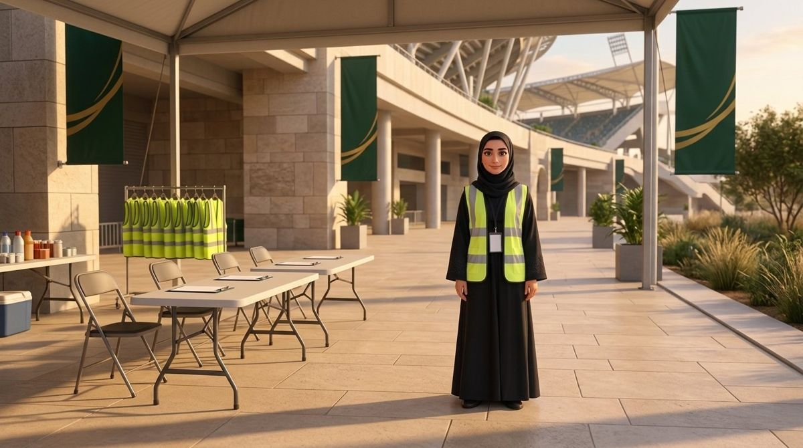
The first-time marshal
"Tell me what to do when it actually happens, and let me practise it before I'm standing at the gate."
The SMP marshal journey: 16 modules, 29 lessons
Moving track · hover or tap to pause
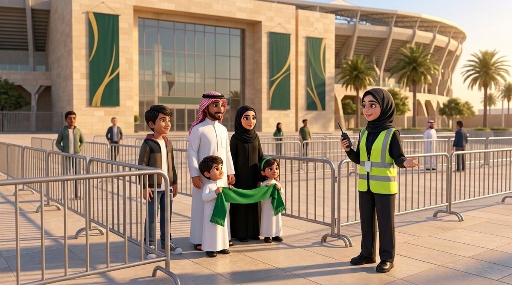
M1StartWelcome & the tournament
Baseline, event types, hospitality
Role & conduct
Authority, duties and posts, code of conduct
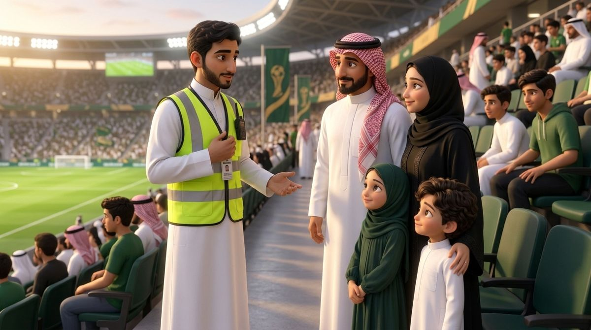
M3The spectator journey
Venue, customer service, wayfinding
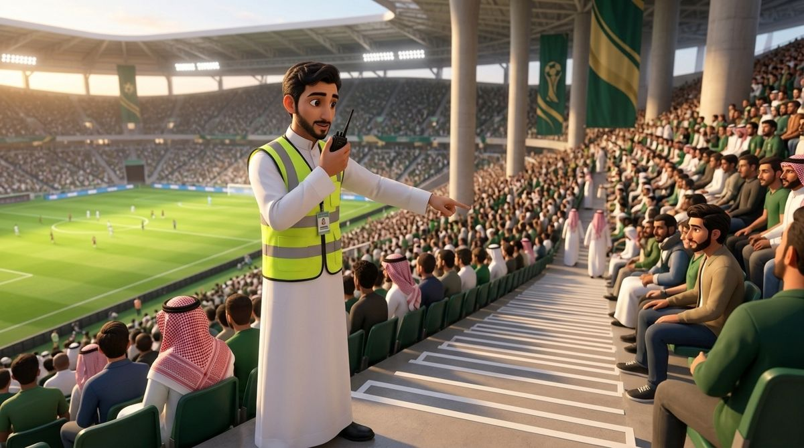
M4Crowds & communication
Talking to crowds, crowd psychology
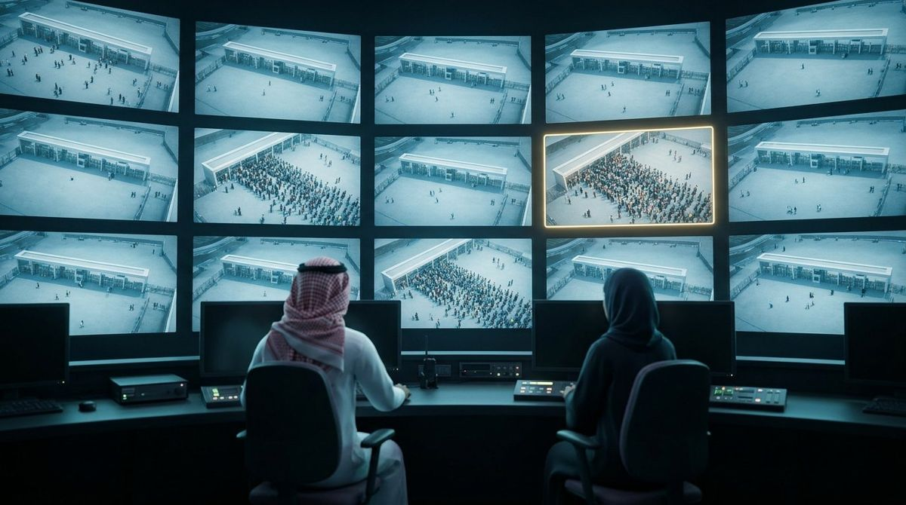
M5Emergency services
Briefing, fire safety
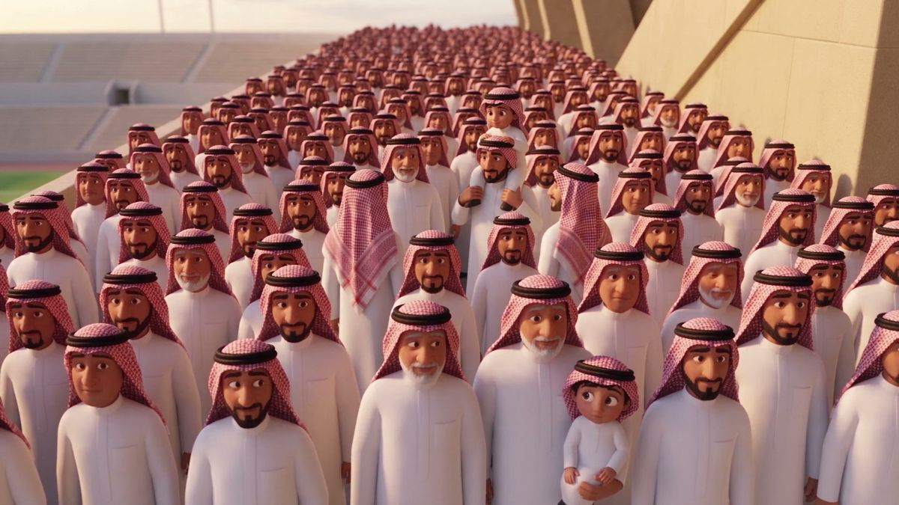
M6Crowd safety
Density, flow, lessons from history
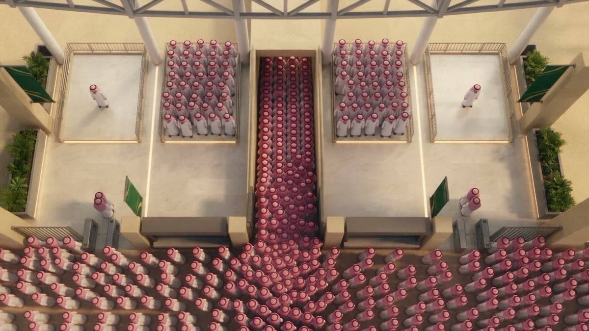
M7–8Ingress & egress
Queues, stop and hold
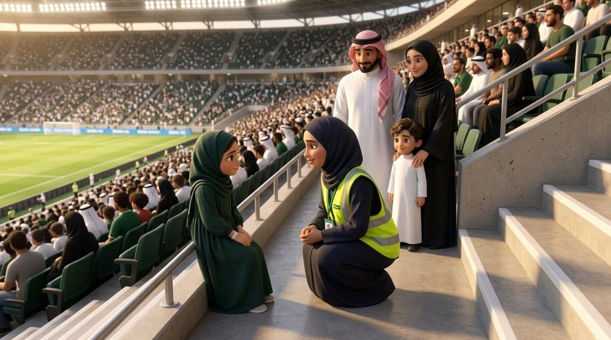
M9People skills
Reporting, de-escalation, safeguarding
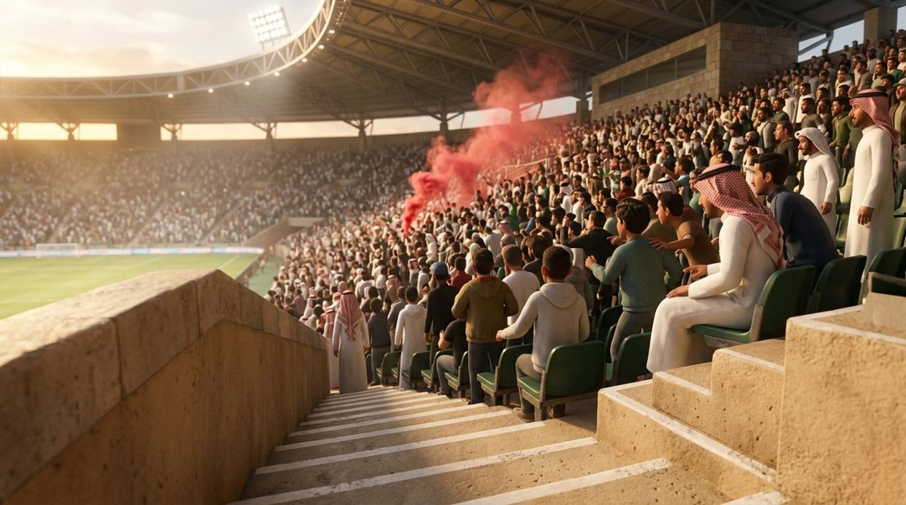
M10Hazards & emergencies
Suspicious items, evacuation, alerts
Medical response
Emergencies and CPR
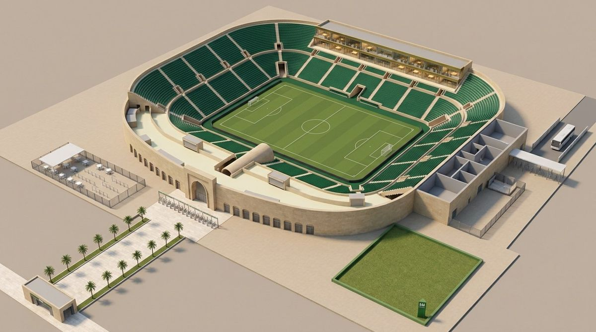
M12Accessibility
Assisting fans, accessible routes
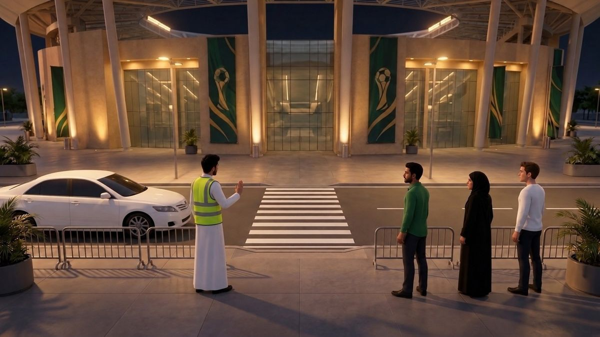
M13–15On the ground
Traffic, observing your area, tickets, info points
Study guide & final quiz
Plus a field-notes pack for the shift
Phone-first micro-lessons for frontline marshals, plus a field-notes and resources pack.
Supervisor lessons on leading teams, briefings, ingress, incidents, evacuation and the final decision review.
Six decisions that shaped every lesson.
Each principle answers one constraint from the brief. Together they made the programme consistent enough to build fast, and specific enough to change behaviour.
Micro, phone-first lessons
Short sections with one task per screen. Progress is saved, so a learner can stop when the shift starts.
Answers: little time, on a phone
Arabic-first, not translated after
Layouts were built to mirror from day one. Approved Arabic from a human translator was used word for word.
Answers: language, trust
Show it, then let them do it
Each lesson opens on a real situation, models the right response, then hands the decision to the learner.
Answers: new to the role
Consequences, not quizzes
Branching choices show what happens next. A wrong answer explains why, then lets the learner try again.
Answers: safe to fail
A must-pass safety rule
Safety-critical questions must be answered correctly to pass, whatever the overall score.
Answers: safety-critical content
One recurring cast
The same marshals appear across all lessons, so learners recognise colleagues and situations, not stock models.
Answers: culture, recognition
Anatomy of a lesson
Every lesson followed the same seven-beat rhythm, so learners always knew what came next and the team could build fast.
Lead designer, developer and keeper of the timeline.
Working with the client's subject-matter reviewers and a professional Arabic translator.
Designed and developed the SMP and SSP lessons
Designed the learning and built the lessons for both programmes on one shared course engine: scenario-first, bilingual and responsive.
Managed the timelines
Turned the client's source documents into a module map and a delivery plan, then kept every lesson moving through it in waves.
Led a team of three
Set daily priorities for one instructional designer and two AI video specialists, reviewed their work and kept one source of truth for every decision.
Built the AI media pipeline
Reference frames, prompt checks and a scored QA step for every generated picture and clip before it reached a lesson.
Owned quality
Automated screenshots of every screen in both languages, fact and language reviews, and cultural-respect checks.
Ran the client reviews
Answered each review comment with a priority, a fix type and a status, and closed it only once the fix had shipped.
Two processes that never mix.
Content is written and approved first. Production only reads the approved release. A late media fix can never undo an approved word, and an approved word can never be quietly changed during the build.
Content
Words & decisions- IntakeClient sources, facts, glossary and brand rules in one place
- DesignObjectives, screen plan and interaction choice per lesson
- WriteEnglish script drafted with AI, edited by hand
- ApproveSubject-matter sign-off, logged as numbered decisions
- TranslateArabic from a professional human translator, used verbatim
- ReleaseA versioned, approved release: production's only input
Production
Media & build- MediaAI pictures, clips and voice-over from approved references
- BuildOne course engine renders every lesson in both languages
- QAEvery screen at four sizes × two languages, plus fact and language review
- PackageSCORM 1.2 zip, manifest checked, handed to the LMS team
- ReviewClient comments answered row by row, fixed in the right lane
The QA gate. No package shipped until every step was closed and current. If anything a step depended on changed, the step went stale and ran again.
Approximate. Lessons moved through in waves, so content, media and build overlapped from week 3.
AI did the volume. People made the calls.
Hundreds of scenes and clips with the same cast, in a realistic stadium, would have been impossible on this timeline with a film shoot. AI made it possible. Hard rules kept it on-brief and respectful.
A consistent cast
Generated from approved reference images, so the same marshals, uniforms and venue appear in every lesson.
Stills first, then motion
Each clip was animated from an approved still, so motion was paid for only once the frame was right.
Arabic voice-over
AI narration and character voices, directed for a natural regional delivery, speaking every approved word.
Drafts, never final
AI drafted English scripts. A person edited, the client approved, and the Arabic came only from a human translator.
Scored before use
Each picture and clip was checked against its prompt, the references, the neighbouring screens and the cultural rules. Below the bar meant redo.
Thousands of screenshots
Every screen captured in both languages at phone, tablet and desktop sizes on each build.
AI media spend, against budget
Generation cost dropped by about a third while the number of media pieces went up.
One lesson, two languages, every screen.
Drag the handle to compare the same screen in English and Arabic. The whole interface mirrors: navigation, progress, feedback and buttons.
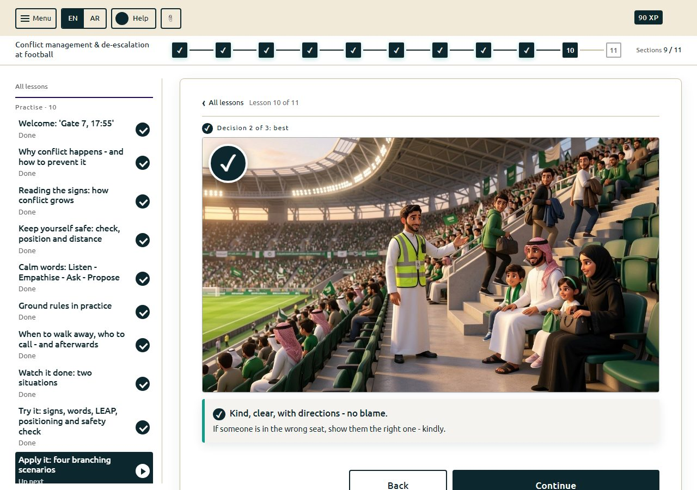
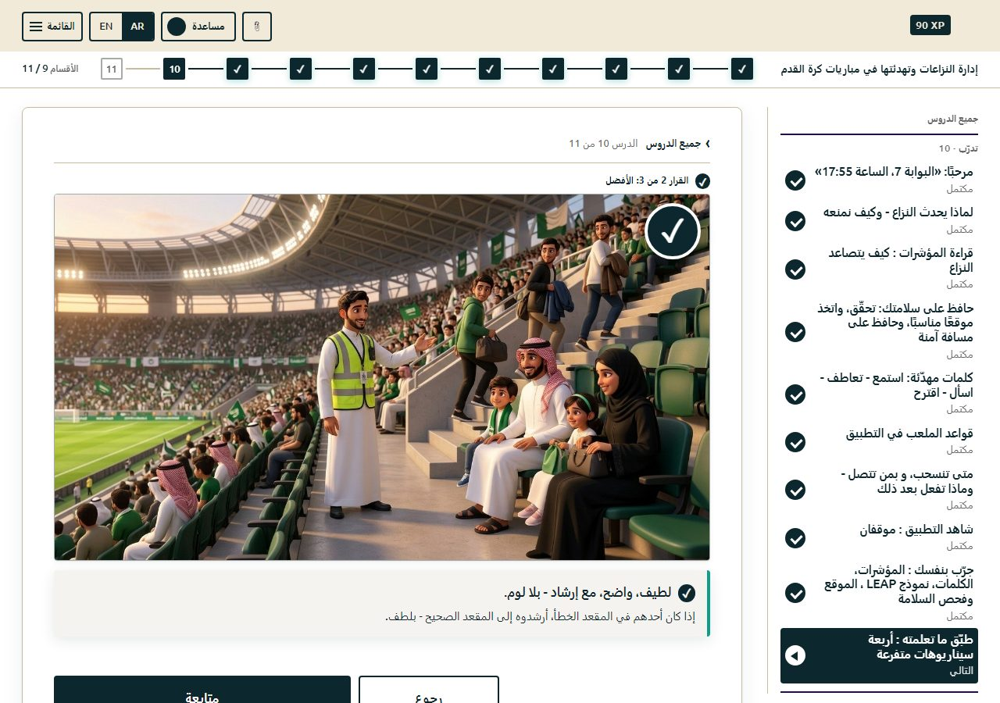
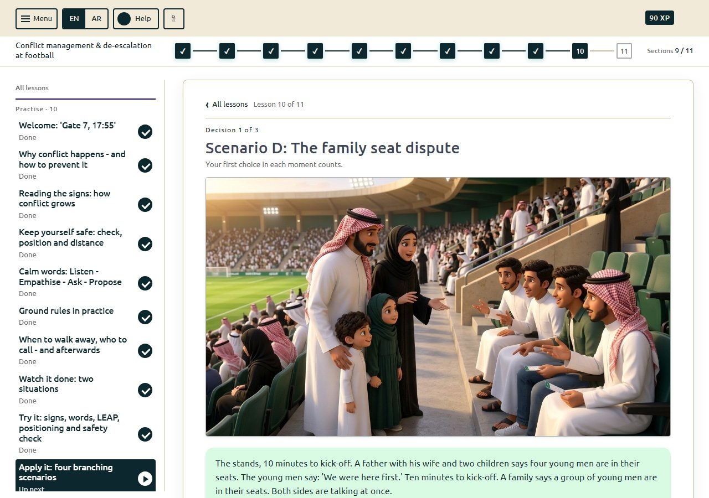
Apply it. Four branching scenarios close the conflict lesson. Every option is a full sentence a marshal could actually say.
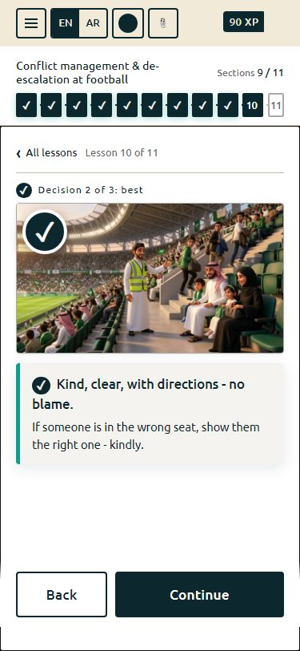
Phone first. Most learners studied between shifts.
Clips that teach by showing.
Full lesson clips, all AI-generated. The sound is the Arabic voice-over learners heard. Switch subtitles between English and Italian under each clip.
Play three of the activities.
Working versions rebuilt for this page from the course content. Each one gives instant feedback that explains why, and lets you try again. In the course, every activity also runs in Arabic.
The family seat dispute
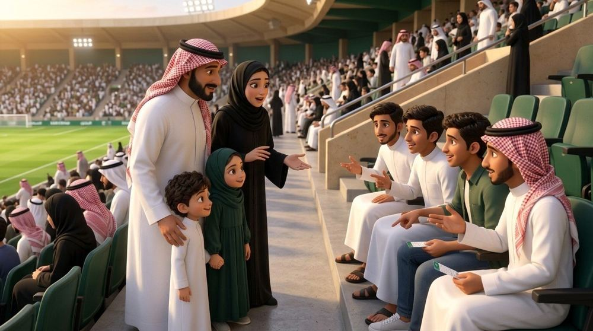
Decision 1 of 3
What do you do? Every choice has a consequence.
Design note. The wrong options are mistakes real marshals make: taking sides, the right facts in the wrong words, physical contact. Each one gets its own consequence, not a generic "incorrect".
The marshal's line
Tap the four steps into order.
Tap the step that comes next.
Design note. Four words a marshal can recall under pressure. The order is the lesson.
A suspicious bag: my job or not my job?
One card at a time. Is it your job?
Design note. Knowing where your role stops matters as much as knowing where it starts.
A recurring cast, one venue, many situations.
On time, under budget, still growing.
SCORM packages delivered to the LMS, each through the QA gate.
Every package reached the LMS by its delivery date.
to close 95% of the first client review's 80+ comments, each with a note on what changed.
AI media spend against budget, with more media made.
What I'd take into the next programme.
Separate words from pixels
Keeping content approval apart from production stopped late media fixes from reopening approved text. It also let the team work in parallel without stepping on each other.
Sign off the picture before the motion
Approving stills first, then animating, was the biggest single cost lever. Any clip changed after its sign-off cost review time again, so freeze earlier.
A comment is closed when the fix ships
Not when it is answered. Closing rows only on delivery kept the client's trust through every review round.
Build the system, not just the course
One engine, one lesson rhythm and one QA gate meant the SSP supervisor programme started at full speed.
Have a programme that has to be ready by a date?
I design and build learning programmes that ship on time, in more than one language, using AI where it earns its place.
Get in touch at BEClear Communication beclearcomm.net